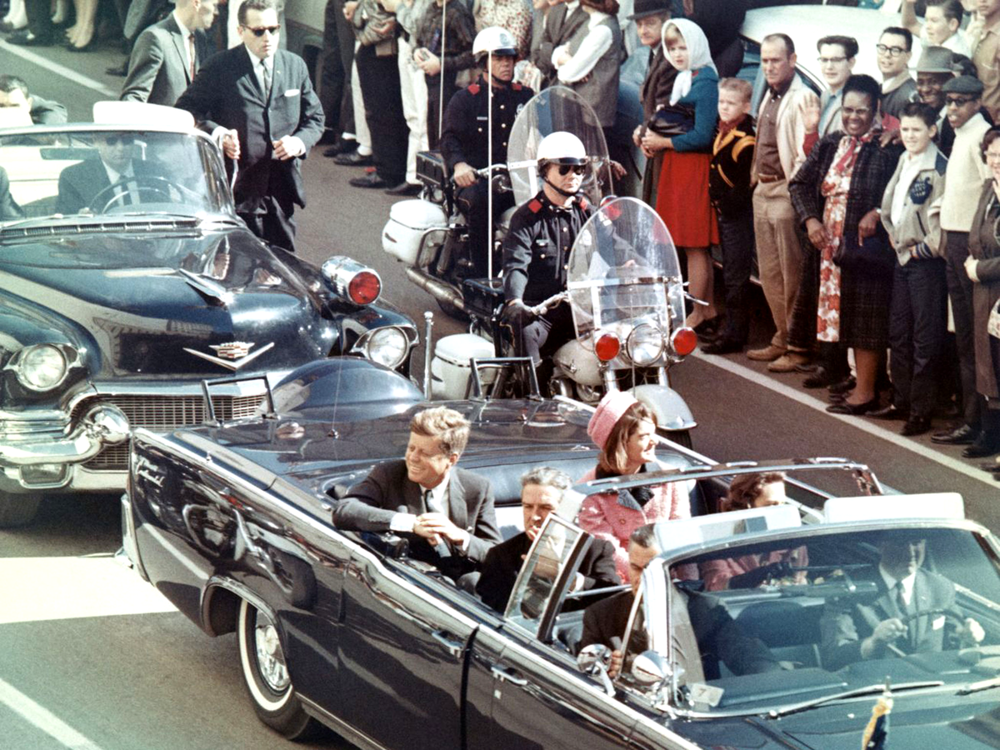

Historical Event: JFK Assassination

Fig.1 - President John F. Kennedy, his wife Jacqueline, Texas governor John Connally, and Connally's wife Nellie in the presidential limousine minutes before the assassination in Dallas.
Audio Tracks
Your browser does not support the audio tag.
Assassination of John F. Kennedy